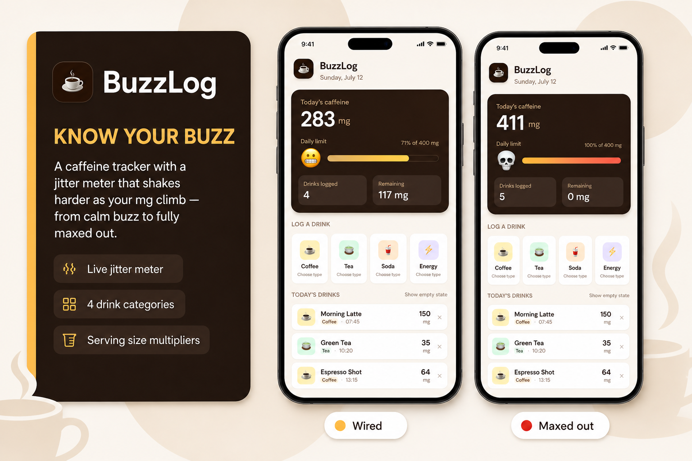

A caffeine tracker that logs drinks by category, serving size, and mg — with a shaking status emoji that tracks how wired you are.
Role
Product Designer & Developer
Timeline
2026 · Prototyping
Tools
HTML, CSS, JavaScript, Tailwind

Overview
BuzzLog is a front-end caffeine tracking app I designed and built through vibe coding for ARTGR 5840. It helps anyone see how much caffeine they have logged today by picking a drink category, choosing a specific drink, and confirming a serving size — then watching a daily-limit meter and status emoji update in real time. I owned the full experience — dashboard UI, drink catalog, modal flows, shake interaction, and empty states — using HTML, CSS, JavaScript, and Tailwind with no backend.
Challenge
People underestimate how fast caffeine adds up across coffee, tea, soda, and energy drinks.
I needed a focused prototype that felt playful and clear without accounts or a database. The constraints were clear: front-end only with placeholder data, a 400 mg daily-limit guideline, category → drink → serving logging, and an interaction (shaking status emoji) that communicates intake intensity without cluttering the meter.
Solution
I shipped a single-page static app with a dark dashboard card for today’s total, a progress bar against a 400 mg limit, drink count / remaining mg, and four category tiles (Coffee, Tea, Soda, Energy). Tapping a category opens a drink picker from a curated catalog; selecting a drink opens a serving-size step (0.5×–2×) that multiplies base mg before logging. Today’s drinks list shows name, type badge, time, and mg with remove controls, plus an empty state with sample data. A status emoji (😌 → 😊 → 😬 → 💀) sits beside the limit bar and shakes in tiers based on total caffeine — the bar itself stays still.
Process
How I moved from a simple log UI to a polished interactive tracker — across discovery, design, development, and delivery.
1Discover
2Design
3Develop
4Deliver
Discover
Scoped a dashboard + drink list + empty state with placeholder data only; no login, database, or backend.
Design
Defined coffee-shop visuals (cream field, espresso card, pastel category tiles), then refined the meter so only the emoji shakes while the progress bar stays calm.
Develop
Built drink catalogs, two-step modals (choose drink → serving size), serving multipliers, and shake tiers with burst timing tied to mg ranges.
Deliver
Tuned emoji stages, empty-state meter reset, and energy-drink category, then prepared the static folder for Netlify drag-and-drop hosting.
AI-Assisted Development
A look at some of the actual prompts used to build this app with AI assistance — from the initial tracker shell to jitter interaction, serving sizes, and energy drinks.
Prompt walkthrough
1 / 5
Slide 1 — Scaffolding the caffeine tracker UI
Create a simple web application for users (everyone) to track their caffeine intake by logging the drinks they've had today (coffee, tea, soda). Use HTML/CSS/JS with Tailwind. Include a dashboard, a list of taken drinks with caffeine amount, and an empty state. Use placeholder data only. Focus on the front-end UI; do not add login, database, or backend logic yet.
Result
Worked well on the first try. The app showed with a warm coffee color palette and used 400mg as the daily limit, which matches the general recommended maximum caffeine intake for adults. Caffeine amounts for all three drink types were included. The initial state showed sample drinks rather than a required empty state, but this was acceptable as placeholder data.
Slide 2 — First attempt at the jitter meter
The app calculates the total milligrams of caffeine and updates a visual 'jitter meter' that shakes based on the intake. When selecting a drink button, it will pop up and allow the user to choose the types. For example, espresso shot, cold brew, and others.
Result
Partially worked. Both the jitter meter bar and the emoji were shaking at the same speed all the time, regardless of the caffeine level, which was visually overwhelming. Having two separate bars also felt confusing.
Slide 3 — Refining shake intensity by caffeine stage
Fix the emoji and shake animation: 1. Make the emoji larger and position it directly to the left of the progress bar, vertically centered with it. 2. Fix the shake intensity stages based on caffeine level: 0–100mg: no animation at all, completely still. 100–200mg: shake once every 4 seconds, gentle and slow. 200–350mg: shake once every 1.5 seconds, moderate intensity. 350mg+: continuous rapid shake. Each shake should be a quick burst, then the emoji stays still until the next shake.
Result
Mostly worked. The emoji size and position were fixed. The staged shake intensity was implemented correctly using setInterval. The timing felt slightly too slow, so further adjustment was needed.
Slide 4 — Fixing shake timing and the empty-state bug
Fix shake timing: 100–200mg: shake once every 1.5 seconds, gentle. 200–350mg: shake once every 0.5 seconds, moderate. Fix bug: When 'Show empty state' is toggled, the caffeine meter section must also reset to empty state (0mg, empty progress bar, no shake).
Result
Worked well. The shake timing now feels appropriate for each stage. The empty state bug was also fixed.
Slide 5 — Adding energy drinks and serving sizes
Add a 4th drink category card: Energy Drink (with relevant options like Red Bull, Monster, etc. and their caffeine amounts). After selecting a specific drink, show a serving size selector before logging: 0.5x (half), 1x (standard), 1.5x, 2x. Multiply the caffeine mg by the selected multiplier before adding to the total.
Result
Worked perfectly. The serving size selector appeared as a step after drink selection and correctly multiplied the caffeine amount before logging.
Style guide
BuzzLog uses a warm coffee-shop palette — cream page background, dark espresso dashboard card, and soft pastel tiles for Coffee, Tea, Soda, and Energy. DM Sans carries the UI; white list cards and rounded category tiles keep the log easy to scan; the status emoji is the only moving element beside a static daily-limit bar.
Color palette
Espresso · dashboard card
Cream · page field
Amber · coffee tile
Mint · tea tile
Peach · soda tile
Violet · energy tile
Typography
BuzzLog
Section heading · DM Sans
Body copy stays readable on cream surfaces; large tabular numbers on the espresso card carry the daily total.
Components
Log a drinkServing sizeCoffee
Gallery
Four screens trace the core journey — dashboard under and over the limit, serving-size selection, and the coffee drink catalog.
Dashboard — today’s total, daily-limit meter, category tiles, and drink logOver limit — maxed meter, 0 mg remaining, and wired status feedbackServing size — 0.5× to 2× multipliers applied to base caffeine mgChoose coffee — curated variants with caffeine amounts before serving size
Outcomes
BuzzLog demonstrates end-to-end interaction design for a habit-logging flow with a real drink catalog, serving math, and feedback that scales with intake. The app runs from any static file server (Tailwind via CDN), needs no build step, and ships with empty and sample states for demos.
Reflection
Vibe coding BuzzLog worked best when prompts stayed specific — shake tiers, emoji mapping, and the serving-size step were easier to iterate than vague “make it nicer” requests. Merging the jitter meter into a single progress bar with an emoji-only shake kept the dashboard readable while still feeling playful. Next time I would persist logs in localStorage, let users set a custom daily limit, and add a simple day history so the prototype can survive a refresh. The main takeaway: playful motion earns its place when it clarifies state instead of competing with the numbers.
Deployment
The app is a static single-page site built with HTML, CSS, JavaScript, and Tailwind CDN — no build step or backend required. Publish the project folder to Netlify with index.html at the root (drag-and-drop works). Live URL can be wired here once hosted.